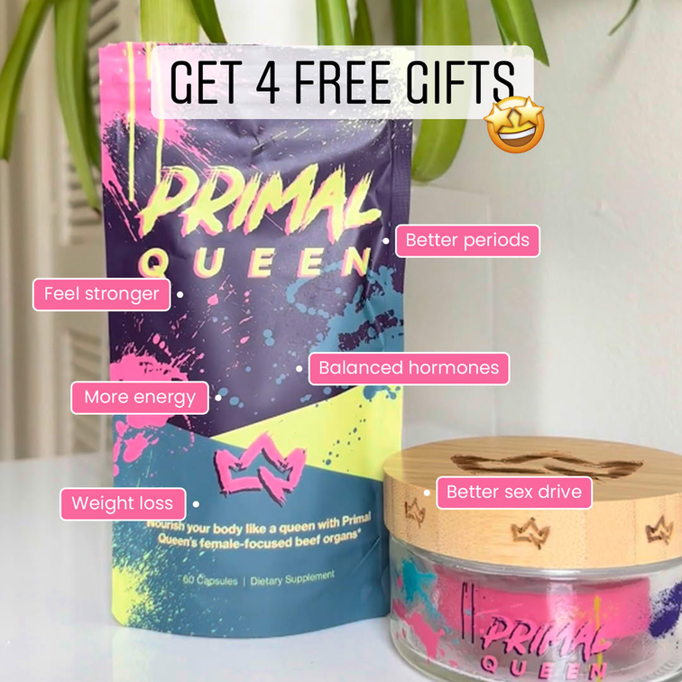
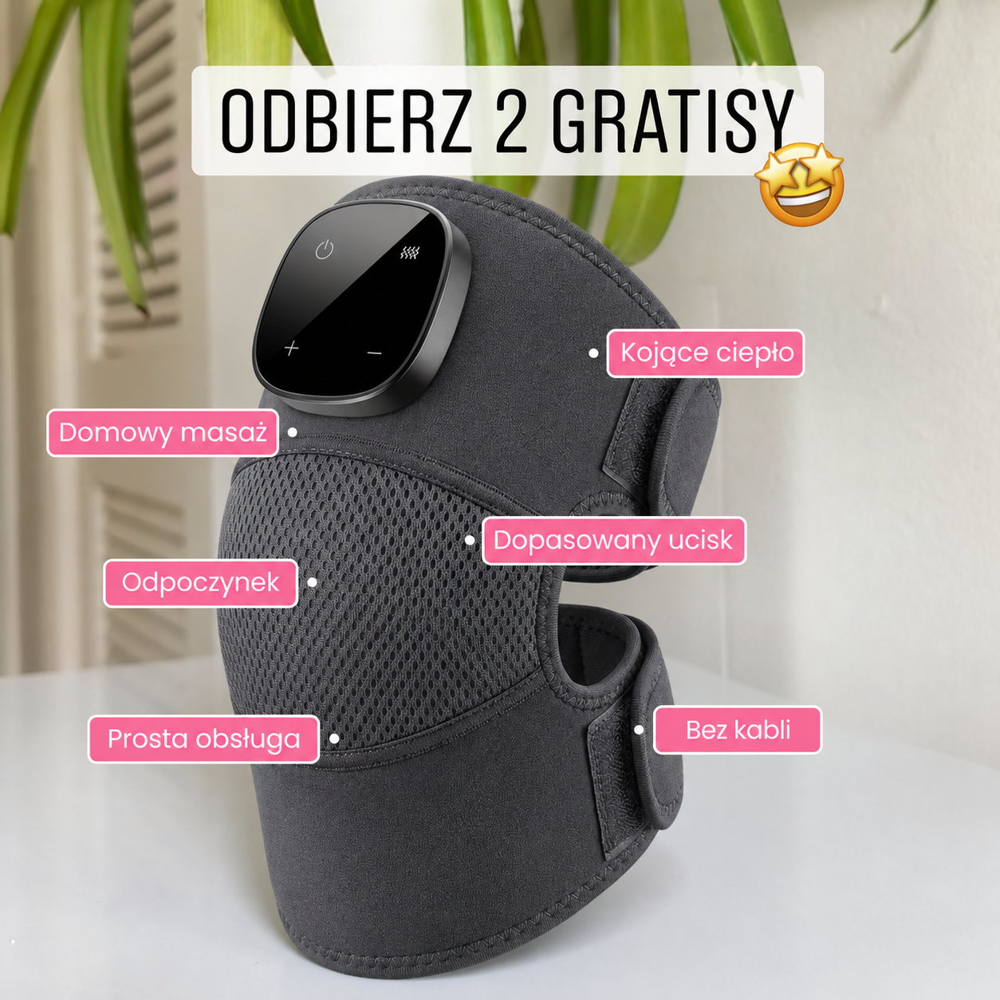

Oryginalna reklama wyznacza geometrię, hierarchię i rytm komunikatu.
Jak czytać
To analiza konstrukcji, nie dowód wyniku.
Źródło jest archiwalnym przykładem. Nie mamy jego wskaźnika kliknięć, zakupów ani zwrotu z wydatków reklamowych. Opis mechanizmu to hipoteza oparta na układzie, copy i ścieżce uwagi.
Dwa gratisy pochodzą z aktualnej strony produktu Noom Knee Pro.
Adaptowana kreacja jest wizualizacją koncepcji. Nie przedstawia klientki ani świadectwa efektu.
Dowód wizualny
Oryginał i adaptacja V3.
Zachowany jest kwadratowy kadr, górny pasek, sześć etykiet i duża strefa produktu. Jedno urządzenie Knee Pro zastępuje grupę opakowań. V3 nie spełnia jeszcze ścisłej blokady geometrii: część etykiet ma inną szerokość, a środek pola „Prosta obsługa” jest przesunięty o około 2,35 punktu procentowego.


Copy adaptacji
Dokładnie 55 słów.
Ciepło, ucisk pneumatyczny i wibracje w Noom Knee Pro łączą się w masażu dopasowanym do domowego odpoczynku. Poczuj ciepło wokół kolana i korzystaj z masażu bez wychodzenia z domu.
Dowiedz się, dlaczego warto mieć własny masażer kolana i jak trzy funkcje w jednym urządzeniu mogą stać się częścią Twojej chwili odpoczynku — we własnym fotelu.
Mapa beatów
Funkcja źródła przełożona na Knee Pro.
| Beat źródłowy | Adaptacja | Decyzja |
|---|---|---|
| Specyficzna kategoria składnika | Ciepło, ucisk pneumatyczny i wibracje | mechanizm |
| Osobiste znaczenie dla klientki | Dopasowanie do domowego odpoczynku | bez testimonialu |
| Dwa odczuwane wyniki | Ciepło wokół kolana i masaż bez wychodzenia | konkrety |
| Zaproszenie „dowiedz się dlaczego” | Dlaczego warto mieć własny masażer kolana | kliknięcie |
| Tradycja jako wiarygodność | Trzy funkcje jako część odpoczynku | prawdziwość |
| Gratisy i sześć etykiet | „ODBIERZ 2 GRATISY” + sześć krótkich pól | oferta |
Źródło i dowód
Klasyfikacja „product-aware” pochodzi z materiału źródłowego. Nie oznacza potwierdzonego targetowania ani mierzonej skuteczności reklamy.
Oferta
Żywa strona produktu pokazuje dwa materiały cyfrowe: „Domowe Sposoby na Artretyzm” i „Plan Żywieniowy Przeciwzapalny”. Nie przedstawiamy ich jako fizycznych produktów.